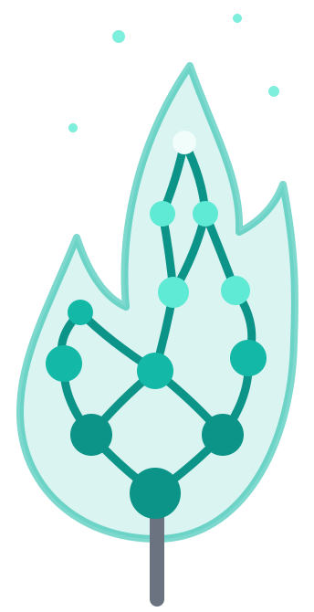
The desktop app for dbt
An interactive dependency graph, live run/build/test with streaming logs, an in-browser SQL editor, and full Git support — running against your dbt-core projects with no cloud account and no data leaving your laptop. With Pro, Wicky, an AI assistant that runs on your machine, answers questions about your models and your data.
Free and open-source core · Pro adds Wicky, a local AI assistant · macOS on Apple Silicon · Notarized by Apple
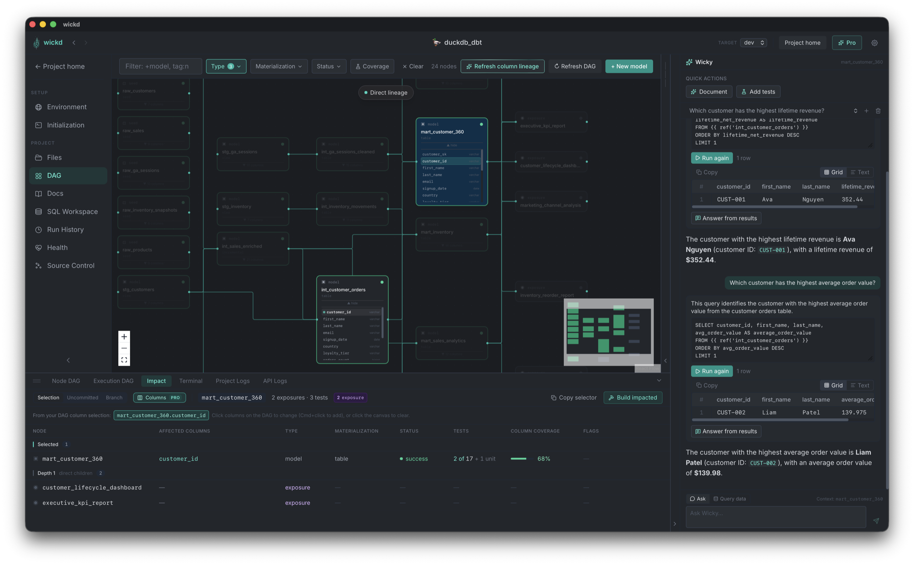
What's inside
wickd replaces the loop of terminal, docs server, and a half-dozen browser tabs with one app that stays in sync with your project on disk.
Dependency graph with live status badges, dbt selector syntax (+model, tag:x), and real-time updates while models run. Multi-select to run, build, or test a whole slice at once.
Trigger any dbt command from the side panel with upstream/downstream/full selector support. Logs stream live — no separate terminal tab to babysit.
A standalone scratchpad with Monaco (the VS Code editor), a Compiled SQL tab, and a resizable results pane. Cmd+Enter runs, Cmd+S saves.
Browse your project tree and edit model SQL, YAML, and config in-browser, with ref/source autocomplete and cmd+click navigation. The tree works like VS Code’s: drag and drop (even from Finder), multi-select, cut/copy/paste, and inline rename.
A VSCode-style Git panel: stage, diff, commit, push/pull with live streaming output, branch switching, and commit history — without leaving the app.
One overview for your connection (dbt debug), schema drift between your warehouse and manifest.json, and source freshness — run them all in one click, see what's out of date, and fix drifted models in place.
See everything downstream of a selection, your uncommitted changes, or your branch — with test counts and risk flags, and one click to build it all. Pro narrows it to the columns a change actually reaches, through filters and joins.
Ask about your models and your data, explain failing runs and tests, and generate docs and data tests you review before saving — on a model that runs on your machine. Meet Wicky →
Hit ⌘K to jump to any page or model, or run any dbt command — with your recent commands a keystroke away.
Share the DAG exactly as you've filtered it — an interactive HTML page anyone can open offline and re-filter, with click-to-trace lineage, or a crisp SVG or PNG. The filters used are printed right on top.
wickd Pro · Meet Wicky
Wicky lives in a panel beside every page. It sees the model you're looking at, its lineage, its columns and its last run. It runs on a model that downloads to your machine, so your SQL, your schema and your data never go to a cloud API. No API key, no per-token bill.
"What feeds this model?" "Why is this incremental?" Wicky answers from your manifest, compiled SQL and lineage, not from guesses.
Ask a question in plain English and Wicky writes the SQL. You see and edit the query, run it read-only against your warehouse, and get an answer from the actual results.
When a model or its tests fail, one click sends Wicky the error, the SQL and a sample of the failing rows, and it tells you what went wrong and where to look.
Wicky drafts model and column descriptions from the SQL and the warehouse. You review the change as a diff and accept or reject each item before anything is saved.
Wicky samples the data and proposes generic tests like not_null, unique and accepted_values. Wicky checks every suggestion against the warehouse first, so the review shows which tests already pass.
The bundled model runs on your Mac. Prefer your own? Point Wicky at any OpenAI-compatible endpoint, such as a local Ollama server.
Editing, not just browsing
The side panel surfaces dependencies, materialization, test coverage, and run controls without a page navigation — and the same Monaco editor VS Code uses is right there for edits.
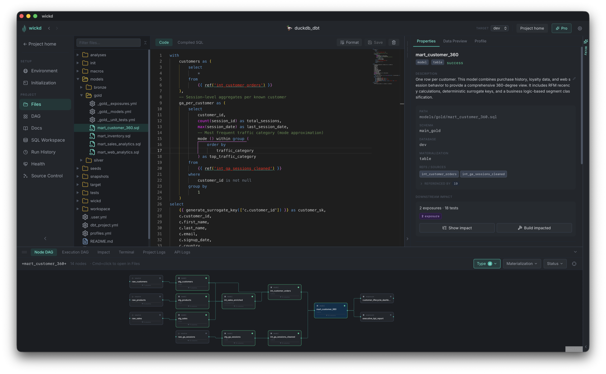
Take a look around
From project discovery to schema drift checks — a tour of what's actually in the window when you're using wickd.
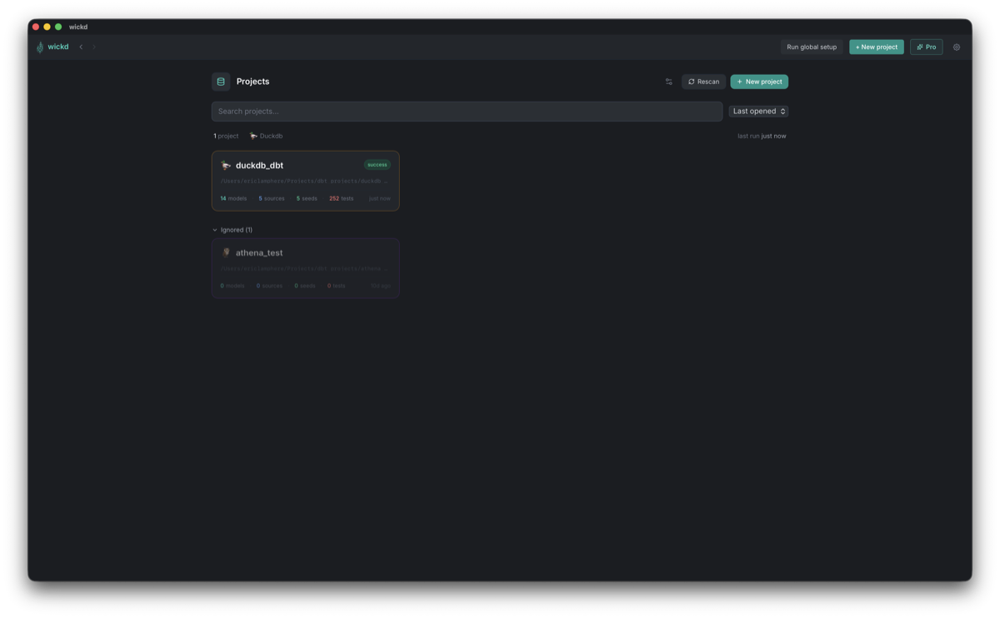
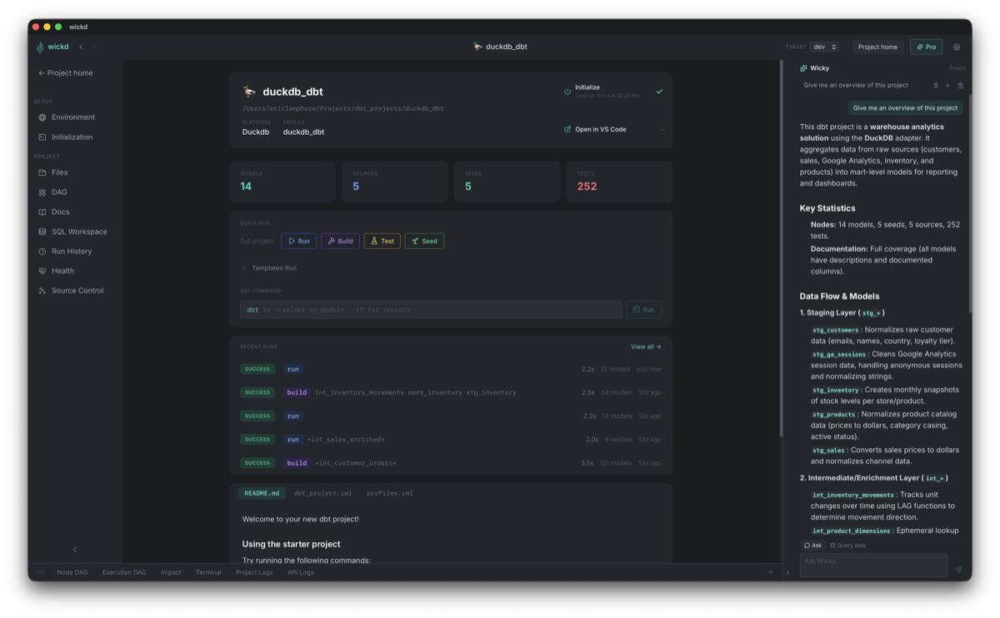
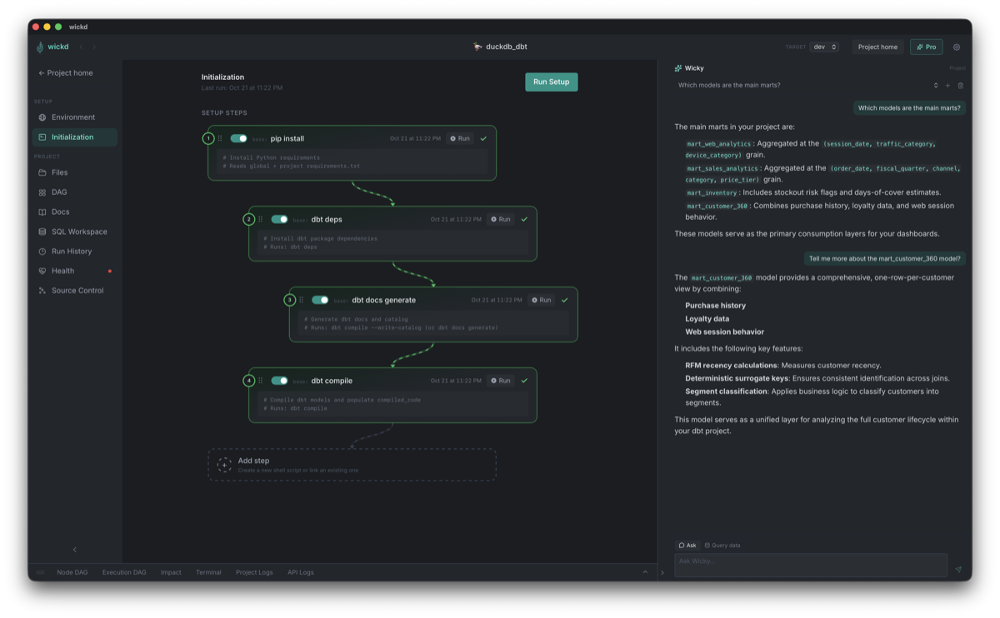
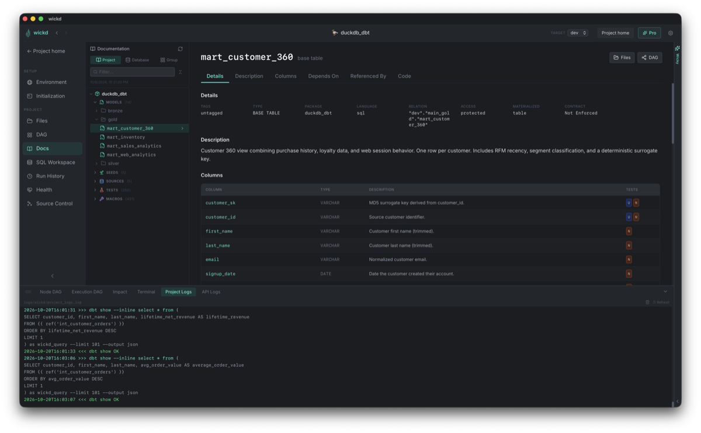
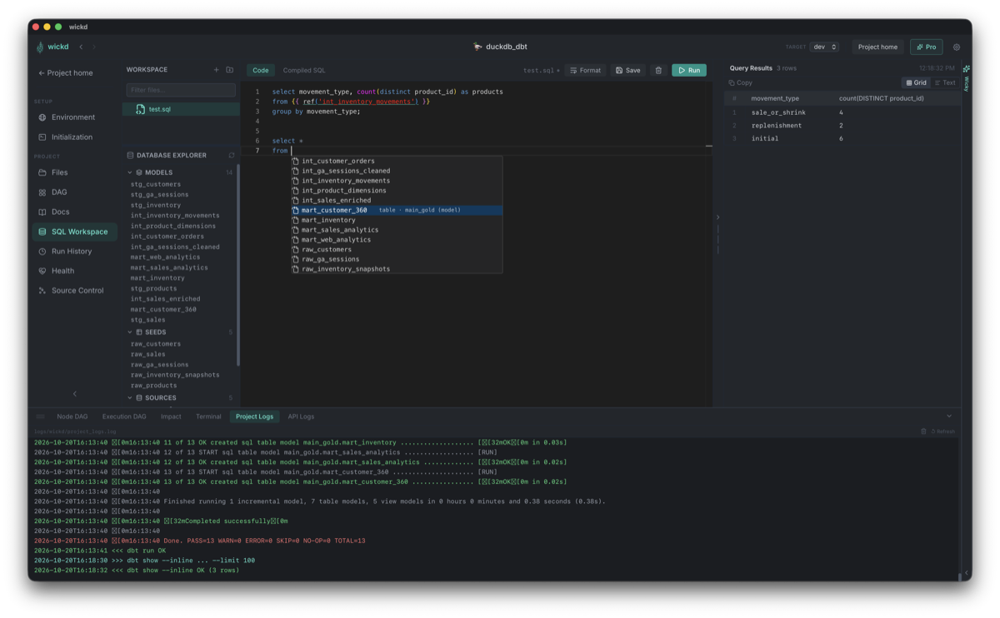
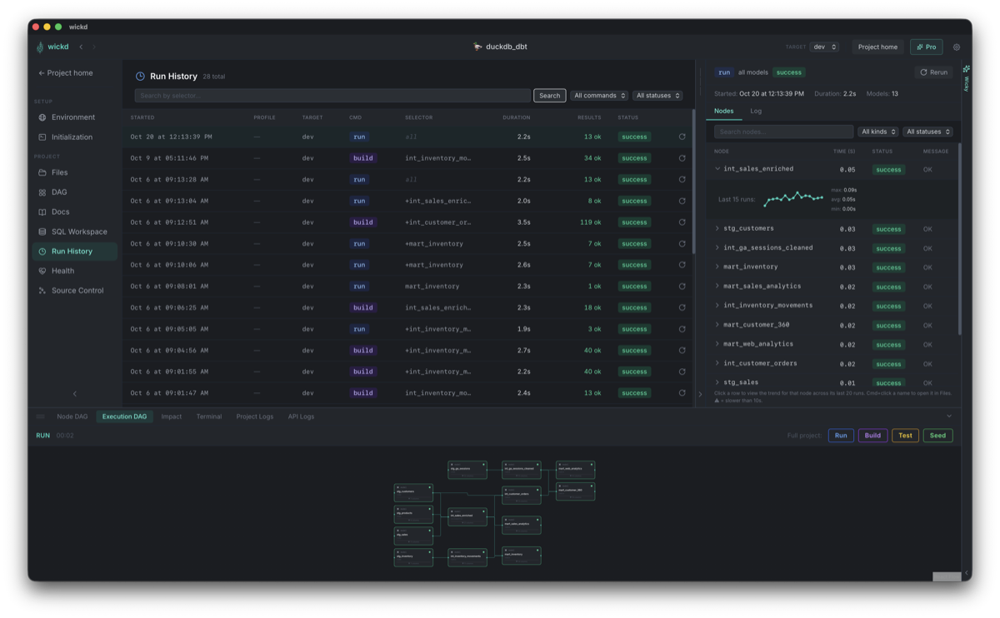
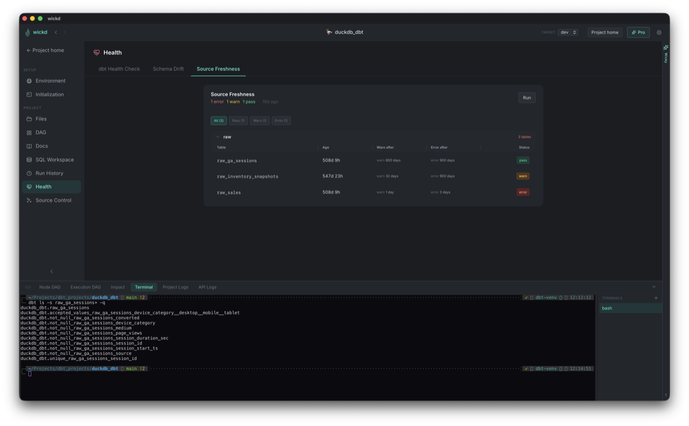
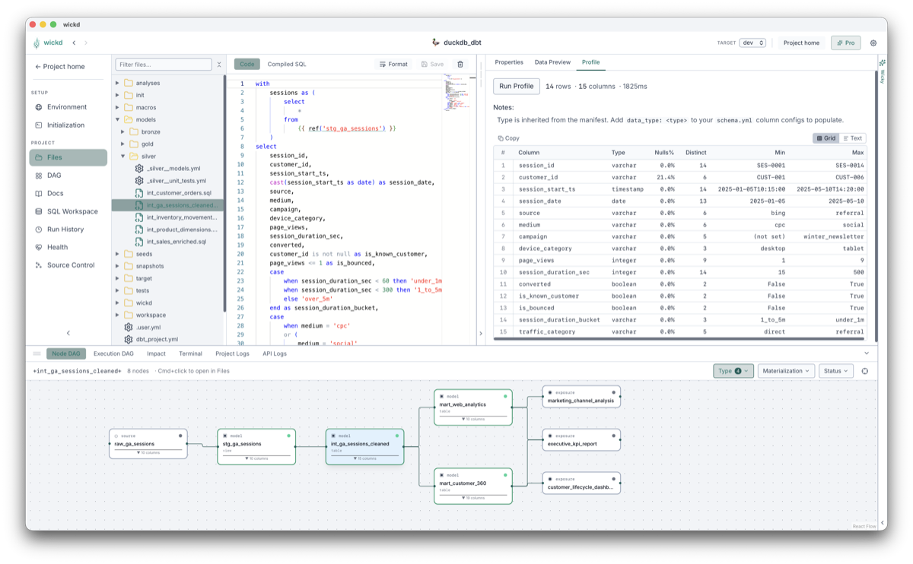
Pricing
wickd's core is free and open-source, permanently. Pro is an optional subscription that adds Wicky, a local AI assistant, plus column-level lineage, column-level impact analysis, lineage propagation, run performance insights and refactors, with more on the way. It also helps fund continued development.
pii to every model, column and exposure they reachdbt parse afterwards and one-click undoYou'll get a license key by email — paste it into Settings → Subscription in the app. How it works
Get started
dbt_project.yml files and lists everything it finds.